東京大学 2004年 理科 第3問
問題
半径10の円Cがある。
半径3の円板Dを、円Cに内接させながら、円Cの円周に沿って滑ることなく転がす。
円板Dの周上の一点をPとする。点Pが、円Cの円周に接してから再び円Cの円周に接するまでに描く曲線は、円Cを2つの部分に分ける。
それぞれの面積を求めよ。
解答
円Cの中心を原点Oに置く。
半径10の円に半径3の円が内接し、滑らないように動くので、点Pの座標x(t),y(t)は
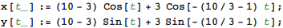
と表せる。
t=0の次に点Pが円Cに接するのは
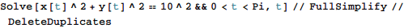
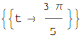
のとき。0<t<3π/5の区間における点Pの軌跡を図示すると下図となる。
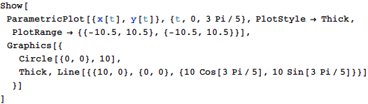
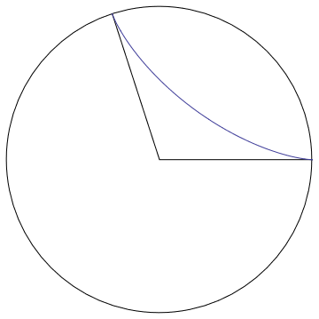
極座標表示でr(θ)と表されるグラフの面積を求める扇形積分は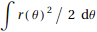で表されるが、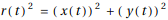、θ(t)=arctan(y(t)/x(t))なので、点Pの軌跡と直線θ=0、θ=5π/3で囲まれる面積は
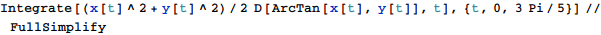で計算できる。
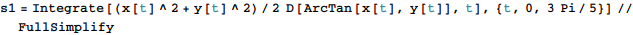
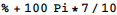
となる。従って、大きい方の面積S1は残りの扇形の面積を加えて
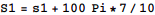
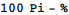
小さい方の面積S2は円の残りの面積だから
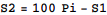
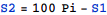